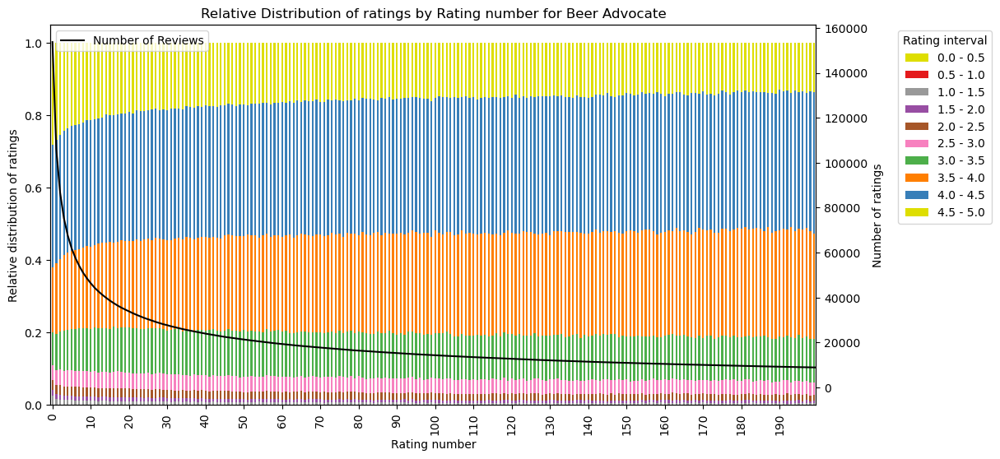
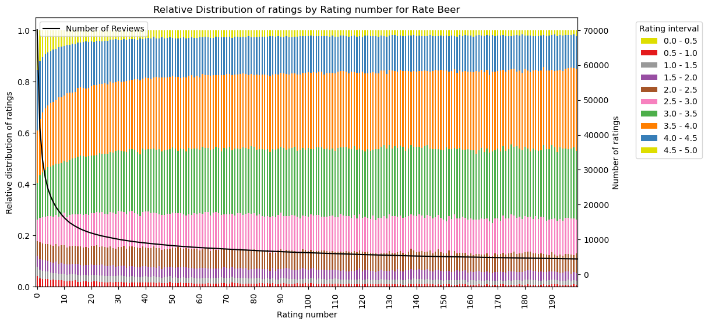
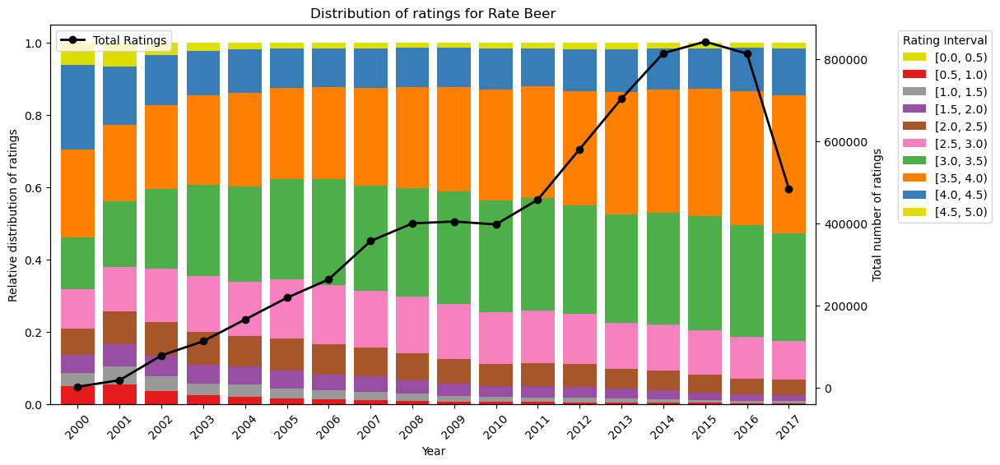
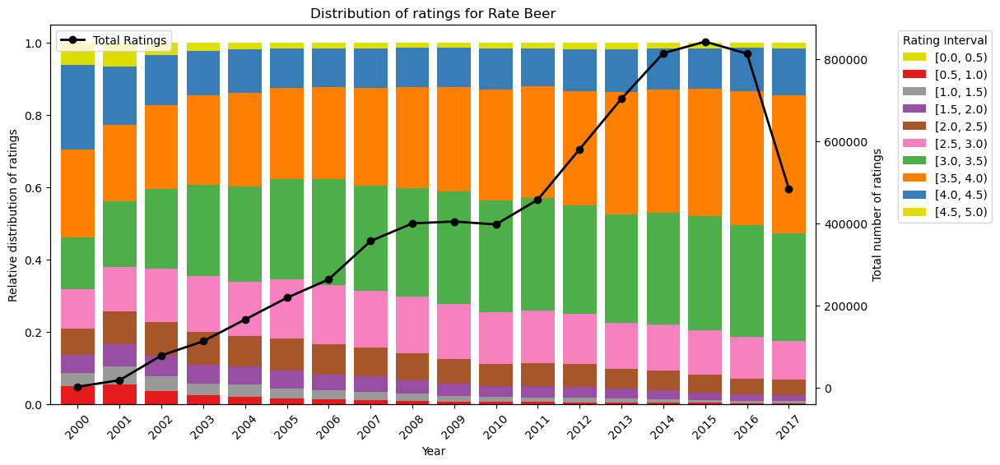
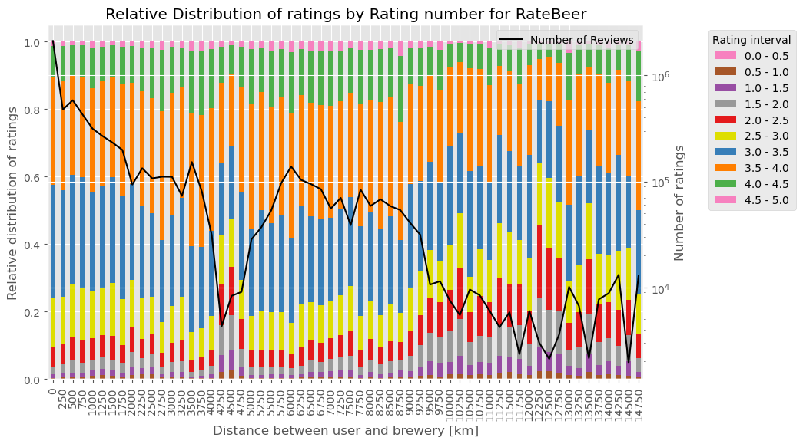
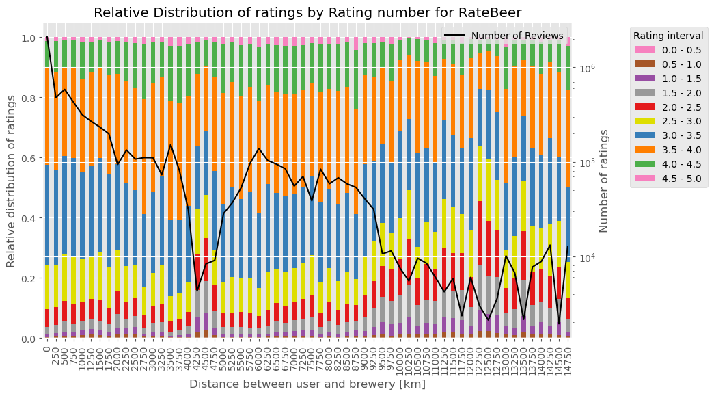

Click on the boxes of the flowchart to learn more!
Choosing a beer can be difficult. There are many options available and so many niches of extraordinarily hidden drinks that only the true beer aficionados know about. It is perhaps no surprise then that RateBeer and BeerAdvocate try to make this wisdom more accessible by using thousands of reviews on hundreds of different beer types from all over the world. But, of course, reviewers can be more or less biased and perhaps a curious beer enthusiast will have skewed information when considering their next beer. In this study, we analyse reviews from both RateBeer and BeerAdvocate to identify what patterns seem to influence reviews and in which way.
We are first interested in investigating if the experienced reviewers rate their beverages differently than the inexperienced ones. We try to identify experienced users by the number of reviews they have given and by their choice of words. We then consider if reviewers tend to rate beers from their own country better or worse than the beers from other countries and check if the distance between the reviewer and the brewery is also a factor as patriotism can be an important factor that affects a review. Following this work on both beer wisdom and space, an analysis on time is needed to complete our understanding of the biases that drive beer reviewers. We therefore analyse seasonality to find if certain periods around the year impact beer ratings and individual beer styles.
In the end we want to see how this gained knowledge about the reviewers' biases can be put to good use by training a machine learning model to predict whether a user with a specific background will like a specific beer.
Firstly we want to look into whether the experience of a user, defined as the amount of reviews provided on Rate Beer or Beer Advocate, will affect their rating. The graph below shows the ratings the users give depending on how many reviews they have written during the lifetime of their account. A second x-axis shows the total amount of ratings provided at the given rating amount, to ensure that we have a sufficient sample size.
 The plots show that the relative distribution of extreme ratings, such as the top- and bottom-tier, decreases as the review count increases. We can also see that the reviewers in BeerAdvocate tend to provide a higher rating on average, than the reviewers in RateBeer. Later on we will see that this interesting finding could be due to the difference in the user's origin. Nearly all the users in the BeerAdvocate database are from the US whereas the distribution of the users' origin in RateBeer is a bit more diverse. Before we make any conclusions on how the number of reviews published might affect the user’s ratings, we should look into whether there exists a general change in the relative distribution of ratings over time by all users.
 

For the BeerAdvocate dataset we can see that the distribution of ratings over the years does not follow the same trend as the distribution of ratings with experience level. The previous finding of less extreme ratings with increasing experience level can therefore not be explained by a general change in rating behavior over time. For the RateBeer dataset we can not conclude that a decrease in extreme ratings is caused by the reviewer’s experience, as it seems to have been a general trend of giving less extreme ratings over the years. This general trend could be due to other factors such as an increase in the amount of premium beers available. If beers in general tend to have a higher standard, this could make it hard to differentiate between the different beers and thus could lead to a reduction of top- and bottom-tier ratings over the years.
Alright, but could these general trends of the experienced reviewers giving less extreme ratings be observed if we zoom on individual beers? For this part, we consider 50 reviews given as the threshold to be an experienced beer reviewer. This classifies roughly half of the users as experienced (43% in the BeerAdvocate dataset, 51% in the RateBeer dataset). We then take the 10 most reviewed beers of BeerAdvocate and RateBeer and plot the distribution of the ratings for new, experienced and all reviewers.
From these figures we see a few striking particularities. Firstly, the experienced reviewers consistently provide less top-tier ratings than the new reviewers which aligns with the findings of the previous section. Secondly, the ratings are dominated by the experienced reviewers, which do not rate popular beer styles well; in fact they rate them worse than inexperienced users do.
Is this also the case for RateBeer?
Generally, the previous observations also hold for RateBeer with experienced reviewers giving less extreme ratings than new ones while still dominating the mixed ratings. It also seems that greater indecisiveness exists for the new reviewers as their ratings are more dispersed than the experienced ones. A particular case is the Budweiser beer in which new reviewers give both the highest and lowest ratings. Perhaps the greater occurrence of extreme ratings from the new reviewers is partly due to this indecisiveness or a lack of knowledge on what experienced reviewers agree makes a “good” beer.
As we observed, experience seems to play a significant role in how, and particularly how well, individuals rate their beers. However, it is fair to question whether the total number of previous ratings is truly a perfect measure of a user's experience. While it certainly provides a useful indication and is a legitimate estimator, we wondered if there might be a more sophisticated way to identify experienced users.
As humans, we can often tell whether someone knows what they are talking or writing about, especially when we ourselves have expertise in the subject. This suggests that it might be possible to infer a type of “experience level” from the text of reviews. There are numerous resources on how to describe beer, and for "beer sommeliers," there are even specific guidelines on how to assess and articulate beer characteristics.
We therefore created a list of these words that are most likely to be used by people that know quite a lot about beer. We then split the users into two groups: The experienced and the inexperienced users.
Experienced users are those that:
With this definition in place, we are able to proceed with further analyses based on this experience-based classification. First let’s look at some general statistics:
We can see that just 6.4% of the users are considered expert users with this metric. On the other hand more than two thirds of all the ratings are written by these users. This means that most of the ratings on the platform are written by a small fraction of the users with a consistent interest in beer. Concerning their rating behavior, in the middle plot we can see that there is a slight difference, as experienced users rate 0.1 points worse on average. But we have to investigate further.
We can make a more in-depth analysis by calculating statistics for both groups for every beer style individually. Like that we could see whether there are beer styles that are “beginner-friendly” or which grow on you with time but might not suit your taste when you first try them. In the following plot we first show what proportion of ratings of each group which beer styles make up.

In the plot the beer styles are ordered by the total number of ratings for that style, meaning that "American IPA" is the beer style which the most ratings are about. We can already learn quite a lot from this plot. Interestingly, the 3 beer styles that clearly make up a clearly larger proportion of the ratings among inexperienced users compared to experienced users, are also the 3 beer styles that are generally rated the most. This means that particularly popular beers are even more popular among inexperienced beer users than among experienced beer users. This also makes sense, because if you are just starting to get interested in beer, you are unlikely to start with a specialty beer, but rather drink a beer that is available in the supermarket. Conversely, the difference for all other beers is either negligible or the beer style makes up a larger proportion of the experienced raters than the inexperienced ones. This gives us some confidence that the word metric we have established seems to correspond to our natural understanding of “experience” as experienced users are more likely to go to beer-specialized shops that offer special, less common beers. But let us now turn to the mean rating. Just as we showed the difference in the proportions between the two groups in the previous plot, we will now show the difference in the mean rating between the two groups for the beer styles.
This plot provides perhaps the most interesting insight so far. We find that experienced users rate almost all beer styles lower on average than inexperienced drinkers, with the exceptions of “Witbier” and “American Adjunct Lager.” This suggests that with greater experience, drinkers tend to have higher standards for their beers. Thus, when reading a review from an inexperienced versus an experienced beer drinker for the same beer, one should consider this potential bias in shaping expectations or assessments.
We already observed this difference in average ratings at the beginning when we calculated the overall average rating across all beer styles. Now, however, we can see the breakdown by each individual beer style. This additional information can help us better account for rating bias when assessing a particular review.
Another factor that can enter into the user's evaluation as a bias is the origin of the reviewer and the beer under review. Indeed, the country of origin and its culture could have a major influence on the evaluation of a cultural asset like beer. For example, it could be that ratings from users from more wine-oriented countries such as France and Italy are different to those from more beer-oriented countries such as the northern European states. So let's start with a simple analysis and look at the average rating of users from a particular country.
We can already observe some interesting things here. For example, we can see that the countries whose users tend to give critical ratings on average are largely located in Europe. If we zoom in a little closer to Central Europe, we can see that countries such as Germany, Denmark and the Czech Republic, where beer culture has always been very pronounced, tend to give more critical ratings on average.
Interestingly, this contrasts with the average scores of southern European countries traditionally associated with wine, such as Italy, Greece, Spain and France. Here we see very good average scores. This could potentially be linked back to the analysis of experienced and inexperienced beer drinkers, where we have already established that greater exposure to beer tends to lead to lower average scores rather than better ones.
Although this basic analysis has already produced interesting results, it is worth going into more depth, especially on the subject of patriotism: do users from countries with a strong sense of national pride rate beer from their own country better than beer from abroad? Are there certain beer-loving countries that give themselves particularly high marks? Or are there countries that find beer from certain other countries particularly bad?
To answer these questions, we divide the ratings into two groups: those about domestic beer and those about foreign beer. A rating belongs to the former group if the country of the brewery of the beer matches that of the user. In a first analysis, we initially look at the proportions of domestic beer and foreign beer in the data set, both in general and grouped by country.

We find that the distribution of ratings between foreign and domestic beers is fairly balanced (roughly 46%-54%). This is generally quite good because it allows us to make statements about both groups based on a substantial amount of data.
However, we find that this is also due to the fact that we treat the USA as one country while we treat all European countries (which would only form a similarly large economic area as the USA if they were together) individually. This is because foreign beer dominates the ratings in almost all countries. In a few European countries with a pronounced beer culture, such as Germany, Poland, Belgium and England, the division is roughly 50/50. The big outlier here, however, is the USA, where around 80% of the ratings are for domestic beer. As already mentioned, one of the reasons for this is that we also consider beer to be domestic if it comes from a different US state than the user rating it. We will therefore later devote ourselves to an in-depth analysis of the USA in order to further examine this substantial part of our data.
Now, however, we don’t just want to look at the number of ratings but rather focus on the bias in the ratings themselves. In the following plot, we see the differences between the average rating for domestic beers and foreign beers by users from the country shown on the x-axis.

We observe some noticeable differences here. For instance, residents of New Zealand rate their own beers on average 0.2 points higher than those from outside New Zealand. The USA also rates its own beers on average more than 0.1 points higher than foreign beers. We can also see that the top 4 countries—New Zealand, the Czech Republic, Ireland, and the USA—all rate their own beer more than 0.1 points higher than foreign beer.
On the other side of the spectrum, we initially find some more extreme values, such as in Malaysia, where users rate their own beers on average more than a whole point lower. However, we cannot consider these values truly interpretable, as they are based on very small data sets. This is also indicated by the very large confidence intervals.
Still, we find some interesting results here as well if we take the confidence intervals into account and ignore the very extremes. For instance, let’s look at Greece. In a previous analysis, we already found that users from Greece generally give a very high average rating across all their reviews. Additionally, the data set for users from Greece isn’t particularly small. Now, with this plot, we can observe that users from Greece rate their own beer on average almost 0.4 points lower than foreign beer. It is difficult to figure out whether this is due to a bias or the actual perception of Greek beers, however this is something one should keep in mind when reading the reviews.
Last but not least, we wanted to know the user-country-brewery-country pair that gives the best and the worst average ratings. We set a threshold requiring at least 1,000 reviews for each combination; otherwise, it’s considered non-representative. Click on the graphics to see which countries love/hate which beers.
On the arrows you can see the average rating users from the country shown on the left give beers from breweries from the countries on the right-hand side.
Let’s move on to a final analysis in this section, which focuses on patriotism and attitudes toward foreign beer in the USA. In our previous analyses, we consistently used only the RateBeer dataset. This was because almost all reviews in the BeerAdvocate dataset were from the USA, making such an analysis less meaningful or less reliable. Additionally, in the RateBeer dataset, we aggregated all U.S. states into a single country, so the USA was by far the country with the most reviews.
However, in this next section, we want to shift our focus to the USA and examine the differences in ratings of domestic versus foreign beer across various U.S. states. For this, we will use data from both datasets. In a first overview analysis let's look at how people from the US rate their own and foreign beer on average.
This is an interesting initial finding. In a previous analysis, we already found that U.S. citizens rate their own beer on average more than 0.1 points higher than foreign beer (though this analysis was only for the RateBeer dataset). Now, with both datasets combined, we can see precise figures, and the difference is even more pronounced at around 0.18 points. 'Beer patriotism' in the U.S. thus appears to be quite strong. Let’s take a closer look at this, broken down by individual U.S. states.
This finding becomes even stronger here. There isn’t a single U.S. state that rates foreign beer higher than its own (although the difference in Louisiana is negligible). There actually seems to be a kind of bias in the U.S. against non-American beer. This should definitely be taken into account when assessing beer ratings from the US.
The United States of America are often given a north/south divide based on the political landscape of the country. We therefore wonder: could this divide actually be reflected in the ratings of beers?

There is a difference in the rating of US and foreign beers between the Northern and Southern states, with both differences being around 0.175. So we can't conclude that there is a tendency that the difference in the rating of foreign/domestic beers of users from southern states would be more extreme than of users from northern states. However, it is noticeable that both categories are rated lower in the Southern states than in the Northern states.
We could already see this kind of result in the map plot about the US. What's visible here, interestingly, is that the beer-patriotism phenomenon seems to be especially common not as a north/south divide, but in (south-)western US-states. So we have to conclude that, if you want to take the patriotism-bias into account, you need to differentiate between different US-states.
So far, we have only looked at countries in general or the distinction between foreign and domestic beers. However, it would also be interesting to conduct a more fine-grained analysis and ask whether the distance between the user’s home country and the brewery’s location has an impact on the rating. The assumption is that geographically closer countries might share similar drinking preferences and, consequently, make similar choices of beer.
Could it be that beers from breweries located closer to the user’s location are rated more highly because the user’s taste is more accustomed to the local beer culture? Or could the exact opposite be true, with beer drinkers seeking exciting new flavors from distant places? We aim to investigate this to determine whether the user-brewery distance is a significant bias.
The following plot illustrates the distribution of user ratings for beers from breweries at various distances. The x-axis shows the binned distances between the breweries and the user. The differently colored segments in the stacked bars indicate the frequency of the discretized ratings for breweries at a given distance from the user. However, it is evident that some bars are more meaningful than others due to being based on more data. Therefore, we have also included a line indicating the number of ratings for each user-brewery distance. We show the plot for both datasets on which our analysis was based, in order to be able to see whether there are any major differences.
 

We can indeed identify some trends. For example, we observe a peak of better ratings at a distance of approximately 4250 km to 4750 km. However, the line plot also shows a drastic decline in ratings, which can likely be explained by the distance between the USA and Europe. At this range, the Atlantic Ocean separates the two continents.
Beyond approximately 9000 km, the number of ratings drops significantly, quickly falling below 1000 ratings per distance bin. It is challenging to make qualified statements here, as the data is very noisy. However, if we focus on the range up to 9000 km and exclude the area around 4250 km to 4750 km, a few subtle trends can be identified.
Specifically, the distribution within the first 2000 km is slightly shifted upward compared to further distances. This suggests that within a radius of about 2000 km, there might indeed be more homogeneous beer preferences to that of more distant users.
Next, we look at the extent to which the time of year and time of year affect the ratings. Seasonal changes can clearly be seen as a bias-provocative feautre, as the time of the year shouldn’t change anything about the taste of a beer. We grouped the ratings into the months in which they were written, as a less fine grained division into quarters would be very imprecise, and not enable us to see how trends develop as the year progresses, while a grouping into weeks or days would produce a lot of data and big dataframes. Let's first explore if the time of year leads to a general rating “high” or “low”, for example, reviewers being more satisfied with their beer in the summer rather than the winter.
A first analysis results that with an average rating of 3.285 and standard deviation of only 0.019, the ratings do not change over time significantly. The highest average rating for the month was in February, with an average rating of 3.305, while the month with the lowest rating was August, with an average rating of 3.244. That is a negligible difference of just 0.061 out of five points.
Thus the hypothesis that the time of year has a general effect on the ratings in total does not hold, rather the first results do not show any signs of large biases. However, let's also have a look at how the beers get rated throughout the year depending on the beer style.
To start, let's first check which beer is a “summery” beer and which beers are “wintery”, by comparing the amount of each reviewed by month. This will allow us to later gauge if seasonality of the beer has an effect on the rating. Since this is a measure of popularity, we rank the beers by number of reviews. A seasonal beer should display a noticeable change in rank over the months of the year. Thus, the graph below filters out beer styles which do not show a difference of at least 14 ranks throughout the entire year. This threshold was chosen as it offers a nice balance between not hiding important data and not crowding the graph. Furthermore, we remove beer styles with less than 500 reviews for at least one month to not flood the analysis with beers which have few reviews, where the change in review is nominal.
We see that beers such as:
Comparing the list of summer and winter beers that we created above, it is difficult to find any relation between seasonality of a beer and its rating. Only four beers that are present in the first graph are also present in the second one, yet their respective two lines show few similarities, especially the peaks in rating amount don’t coincide with peaks in rating. Thus we conclude that seasonality alone has little to no impact on the beer’s rating.
Finally, let's now turn to the final section of our analysis. In the last three sections, we have extensively examined various types of biases among beer reviewers and how they ultimately affect the ratings, but some might still wonder:
What's the point of all this?
Who benefits from knowing whether a beer reviewer is biased in their decision?
Also, we only evaluated each possible bias factor on its own, not connecting them with each other. Possibly some biases can only be seen when set into relation with each other.
As already mentioned in the introduction, this knowledge can, of course, be useful to individual users trying to determine which beers they might enjoy and which reviews they can trust. It’s particularly valuable for large corporations and a significant industry—the advertising industry. If one can accurately assess a user's bias, this information can be incorporated into decisions about which beer to advertise to them and which not to. It is undeniable that biases play a significant role in purchasing decisions (e.g., the stigmas associated with products from certain countries).
To do so, we have compiled everything we have learned so far and built a user-specific beer preference prediction system. It is based on a neural network designed to predict, based on all the collected information about the user and the beer—including the bias-inductive features—whether a user would rate a beer higher or lower than their current average rating. This prediction could then guide decisions on which beer to advertise.
Click on the boxes of the flowchart to learn more!
On that end, we have parsed ratings from 230,000 reviews from the BeerAdvocate dataset, trained a neural network on predicting the user’s opinion and evaluated it on a test dataset. When only including the most basic information about the beer, namely the beer type and the beer’s average rating, the model can only correctly predict the preference in 62.5% of the reviews - not much better than guessing by chance. Including the used vocabulary regarding the user and beer, this raises the accuracy to about 75.6% emphasizing the efficacy of the extracted vocabulary. Additionally using all aforementioned biases, gives us another 3.7% of accuracy - clearly showing the susceptibility of the reviewers towards the biases.
Although this may not sound like much compared to the text features, it is a significant difference—especially when considering the vast amount of money and effort that major companies invest in automated advertising to achieve even a few percentage points of improvement in hit rates. These small improvements often result in significantly higher profits. Also the text features very likely include parts of the user bias as well - meaning that a user also writes more critical reviews about beers he’s biased about.